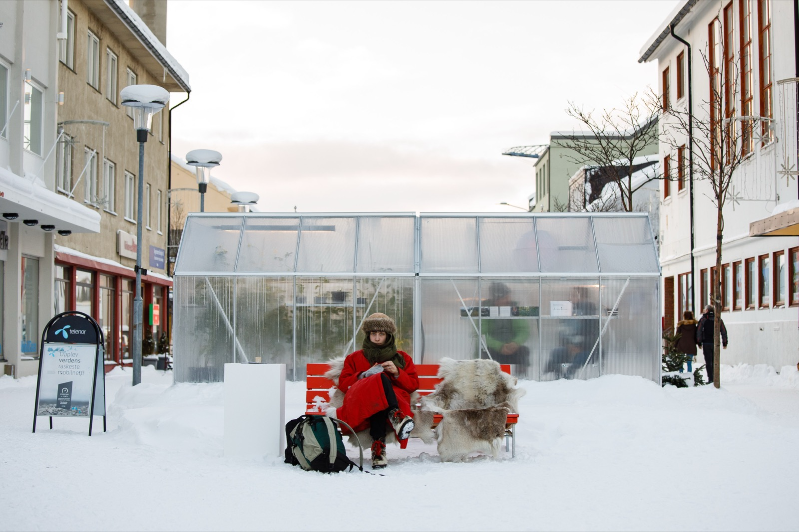
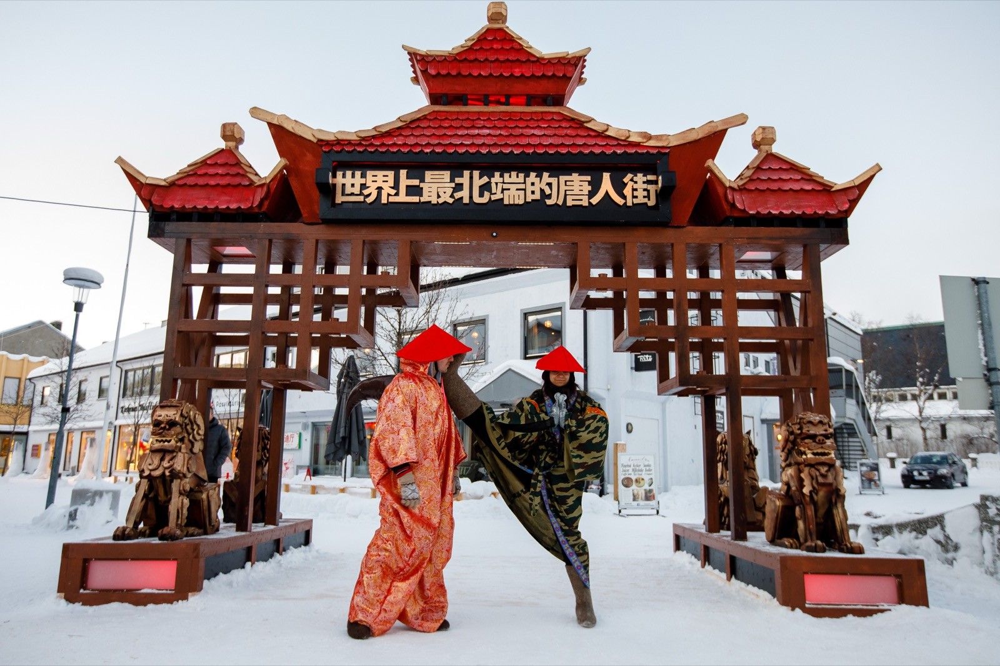
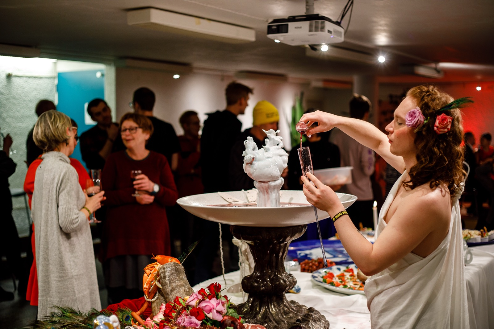
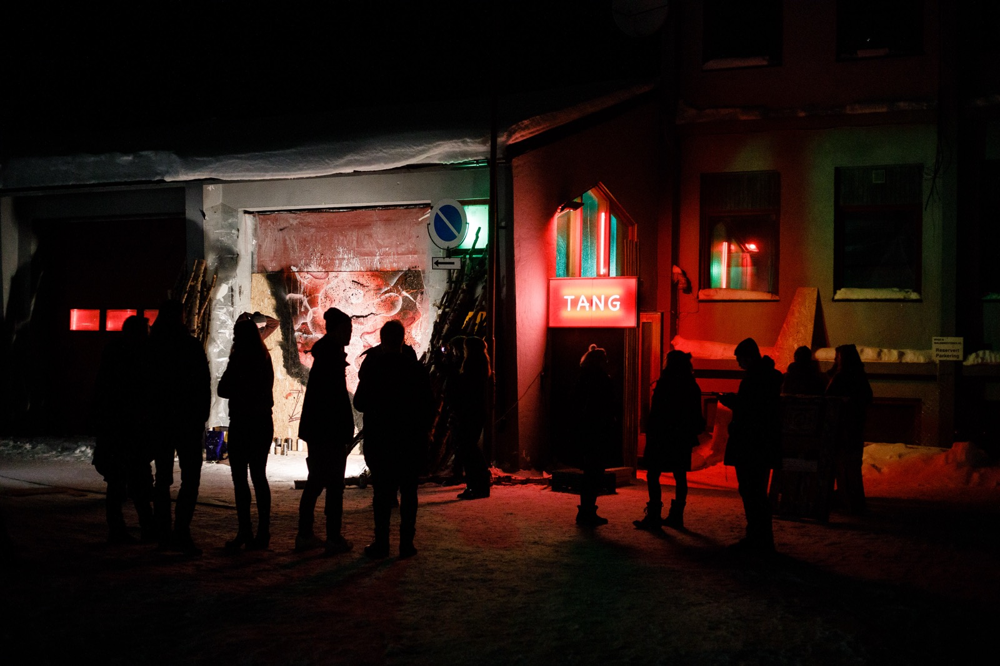

After Murmansk and the heavily militarised zone around it, you step into a crumbling Russian border building that was probably thrown up not long after the October Revolution. The guard looks you over coolly, then informs my Russian travelling companions that they had better not bring shame on the motherland over there. Ten paces on, at the Norwegian border, another guard welcomes you to Europe in flawless English from inside a log cabin where even the LED chandelier came out of some Scandinavian design house. From there it is half an hour to Kirkenes on the edge of the fjord, where a crew of curators and artists have been working for weeks in minus twenty to build the world's most northerly Chinatown for five days in the corner of Norway. I had arrived at the coldest festival in the world, Barents Spektakel.

Kirkenes has hosted Barents Spektakel every February since 2004. The town sits fifteen kilometres from the Norwegian-Russian border. Each year the organisers choose a theme they consider urgent, and the programme forms around it.
This year the theme was China's growing presence and expansion in the Arctic region, and what that could mean for the people who live there. Locals respond to the question that occupies them most through exhibitions by contemporary artists, concerts, and discussions that work the subject over.
How should anyone relate to China's arrival in the Arctic Ocean now that climate change is drawing ever more attention to the northern trade routes? Is it purely economic, or is it a local political and social question too? Xi Jinping is certainly not waking up thinking about it, but China's enormous financial weight can reshape the region even if northern expansion accounts for a negligible share of the country's foreign investment and trade.

So how does a festival this good end up here?
The town is home to Pikene på Broen, a team of artists and curators who spend the whole year filling their gallery, Terminal B, with culture. B for Barents: the Barents Sea is the part of the Arctic Ocean above the northern border of Norway and Russia. Their main backer is the Barents Secretariat, funded by the Norwegian foreign ministry, whose mission is to support cultural and scientific projects built on Russian-Norwegian relations in the north.
Pikene's standing theme is legible before you reach the door. Two symbolic pillars stand outside the building, one marking the Norwegian border and one the Russian, and you enter the gallery through the duty-free zone between them. Diplomatic relations between Norway and Russia have not been warm since the Skripal affair, shared border or not, but in Kirkenes and across the Finnmark region the pull towards cooperation and coexistence is unmistakable. It is no accident that the line-up carries at least one Russian and one Norwegian band every year, and worth noting that across five days there are five or six concerts in total. This year Shortparis, increasingly known across Europe and genuinely impossible to file under a genre, came from Russia along with the local star SPB4, while Norway sent the indie band Kakkmaddafakka.
Politics, society, Scandinavian self-criticism
The most spectacular item on the programme was obviously the performance dinner by Lin Wang, a Chinese-born interdisciplinary artist working in Norway. Most of Lin Wang's projects set out to cut through the simplest social conventions and take down the walls people live behind, so that we can look at each other's reality from a new angle. At the centre of the event stood an ancient Greek banquet table, composed and loaded to overflowing, a string quartet playing baroque music behind it, and Dionysus filling his glass from an endless fountain of red wine. The lightly moderated conversations that formed in that scene were meant to put the social and political challenges of this age and earlier ones at the centre of the argument, while everyone present experienced the abundance that comes of cultures connected by the sea for thousands of years. It worked.

But what does an east-west axis mean to a country that only knows north and south, and what is the subject doing in the coldest corner of Norway?
It says something about the critical instinct of Scandinavian society that the whole festival looked, in many respects, half like a lobbying event in the fight for development money and Chinese investment, while voicing a great deal of criticism of the Chinese approach at the same time.
Kirkenes, along with several other small Norwegian towns nearby, is competing to host a deep-water port where cargo ships can dock, and the Finns are lobbying hard for a railway line connecting Kirkenes to Rovaniemi in central Finland. That would give Chinese goods a straight run into the Scandinavian interior, extending and strengthening the northern Silk Road. The organisers did not look at the subject through an economic lens alone, though. They also tried to understand the long-term social consequences of that bright future, and the responsibility that cultural difference and China's authoritarian character place on Norwegian foreign policy came up again and again. How much of its own resources can a democratic society sell off to a dictatorship? That question got asked across many of the festival's discussions, and not only by local residents: staff from several Norwegian political think tanks, an invited Russian politician, the head of the local business and investment association, and an adviser to Norwegian Amnesty and the Human Rights House Foundation all put it. All of this while the festival was opened by the mayor of Kirkenes alongside the Chinese ambassador to Norway, with a Chinese economic and political delegation in attendance throughout.
Video from the festival Posted by Pikene på Broen on FacebookThe energy source of the future
One genuinely interesting element this year was that in a country sitting on one of the world's largest oil reserves, alternative energy is being researched everywhere you look.
On the way up I read in a local paper that one of the largest cruise fleet operators had converted six of its ships to run on biofuel made from the meat waste of the fish processing industry. On top of that, the other central theme of this year's Barents Spektakel was the untapped potential sitting in seaweed.
More than 70% of Norway's coastline is suitable for industrial-scale seaweed farming and harvesting, and the country leads the funding of scientific research into seaweed for energy and food. Any number of programmes and exhibitions at the festival showed what it can be used for. One of the central venues was the TANG pop-up bar in the town's old fire station. As well as being one of the commonest Chinese given names, TANG means seaweed in Norwegian. The whole space was conceived and built by the Russian installation artist Tatyana Ludavik together with the Norwegian artists Trond Ansten and Kåre Grundvåg. Step through a hidden door behind the DJ booth and you were in a seaweed wine bar, tasting Trond and Kåre's own ferment flavoured with Scandinavian fruit. The walls and the lamps were built from sheets of seaweed, and the people pouring behind the bar included the mayor. In another corner, a tired partygoer could soak between two sets in a water-exchanging seaweed jacuzzi that Kåre designed himself. And in the fire station kitchen, the Oslo star chef Håkon Lindbäck was cooking authentic Chinese noodles flavoured with reindeer and seaweed.

Through Hungarian eyes
It was astonishing to see, alongside the eight-euro beer of course, the entire infrastructure and administration of a town of three thousand people standing behind a cultural event. Most of the exhibitions and talks were held in local libraries, bars and community spaces. The icing on the cake was the fire chief inspecting the pop-up club erected in the old fire station on the first day, contentedly, next to the mayor. The closing party and performance on the last day were held in the local swimming pool, to the considerable annoyance of the two hardy local swimmers who refused to take the slightest notice of the DJ booth, or of the festivalgoers lolling in enormous rubber rings in their lane.
All told, it is a remarkable thing for a Hungarian used to summer festivals to struggle from one exhibition to the next through a howling wind and a snowstorm. And the sort of critical self-reflection that the arts world and local politics manage only a few countries away from us is enviable, all of it on a subject that will strongly shape their present and their not-too-distant future.
To finish, a few more images from Barents Spektakel.